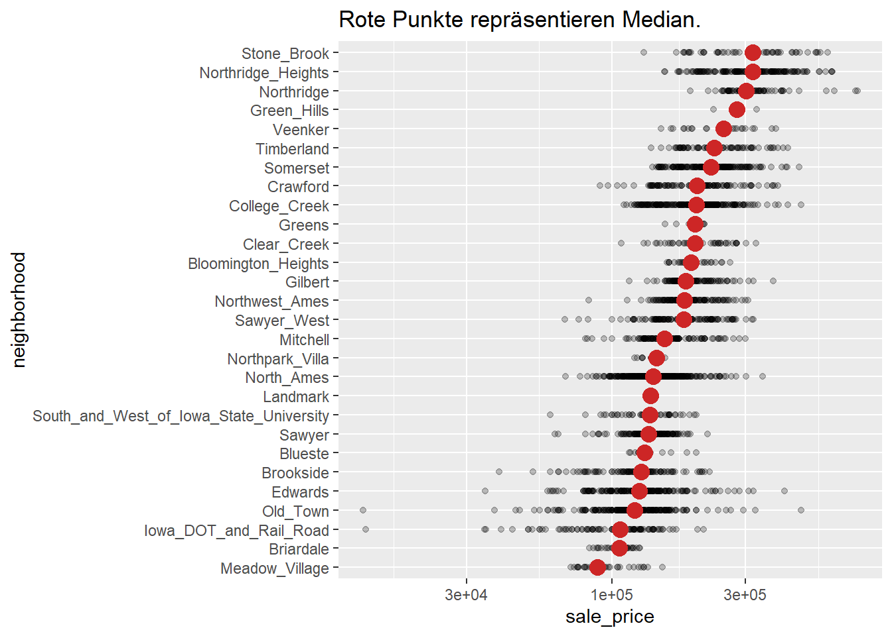

library(tidyverse)
library(janitor)
data(ames, package = 'modeldata')
ames_teil <- ames %>%
clean_names() %>%
select(sale_price, lot_area, ms_zoning, neighborhood)WiWi BrushUp Kurs 2022
Ames Housing - Zusammenfassungen
Zielsetzung
Unser Ziel ist einfach.
Schritt 1:
Schritt 2:
Aufgaben
In dem letzten Tutorial haben wir neue Variablen aus bereits bekannten Größen berechnet. Manchmal will man einen Datensatz aber nicht noch vergrößern. Manchmal will man einfach nur Kennzahlen, die einen Datensatz zusammenfassen. Betrachen wir dazu wieder unseren Ames Housing Datensatz.
Zusammenfassungen für den kompletten Datensatz
Da wir Vektoren mittlerweile mühelos extrahieren können, können wir diese Vektoren durch Statistiken zusammenfassen. Beispielsweise könnten wir den Durchschnitt oder den Median eines Vektors schätzen. Andere Statistiken könnten sich mit der Streuung einer Variable beschäftigen. In diese Kategorie gehören Varianz und Standardabweichung. Nutze nun den $ Operator, um sale_price zu extrahieren. Anschließend kannst du die Funktionen mean(), median(), var() und sd() verwenden, um Kennzahlen für den Verkaufspreise zu schätzen.
## [1] 180796.1
## [1] 160000
## [1] 6381883616
## [1] 79886.69Nutze nun summarise(), um diese Größen in einem tibble ames_summaries zu sammeln.
ames_summaries# A tibble: 1 x 4
durchschnitt median varianz std_abw
<dbl> <dbl> <dbl> <dbl>
1 180796. 160000 6381883616. 79887.Zusammenfassung für eine Untergruppe
Berechne nun analog dazu die Größen für jede Nachbarschaft und speichere dies in einem tibble ames_by_neighborhood. Ordne diesen tibble außerdem nach absteigendem Durchschnittspreis.
ames_by_neighborhood# A tibble: 28 x 6
neighborhood durchschnitt median varianz std_abw Anzahl
<fct> <dbl> <dbl> <dbl> <dbl> <int>
1 Northridge 330319. 302000 10291019636. 101445. 71
2 Stone_Brook 324229. 319000 14226053465. 119273. 51
3 Northridge_Heights 322018. 317750 9203016597. 95932. 166
4 Green_Hills 280000 280000 5000000000 70711. 2
5 Veenker 248315. 250250 4286969017. 65475. 24
6 Timberland 246600. 232106. 4806159657. 69326. 72
7 Somerset 229707. 225500 3299054067. 57437. 182
8 Clear_Creek 208662. 197500 2629660293. 51280. 44
9 Crawford 207551. 200624 4254976811. 65230. 103
10 College_Creek 201803. 200000 2936322410. 54188. 267
# ... with 18 more rowsDiesen Datensatz können wir nun zusammen mit dem Datensatz ames_teil verwenden, um eine Grafik mit Zusammenfassung und allen Datenpunkten zu zeigen. Wir wollen, dass diese Grafik aufsteigend sortiert ist, damit schnell ersichtlich ist, was das teuerste Viertel ist. Dazu transformieren wir neighborhood ins so genannte factor Format. Dies ist ein spezielle Format, dass kategorielle Variablen eine Ordnung geben kann. In diesem Fall machen wir dies mit fct_reorder().
ames_teil <- ames_teil %>%
mutate(neighborhood = fct_reorder(.f = neighborhood, .x = sale_price, .fun = median))
ames_teil$neighborhood[1:25] [1] North_Ames North_Ames North_Ames North_Ames Gilbert
[6] Gilbert Stone_Brook Stone_Brook Stone_Brook Gilbert
[11] Gilbert Gilbert Gilbert Gilbert Stone_Brook
[16] Stone_Brook Gilbert Stone_Brook Gilbert Northwest_Ames
[21] Northwest_Ames Northwest_Ames Somerset North_Ames North_Ames
29 Levels: Meadow_Village Briardale Iowa_DOT_and_Rail_Road Old_Town ... Hayden_LakeWie du siehst, hat der Vektoroutput nun zusätzlich “29 Levels: …” generiert. Dies ist das Zeichen, dass hier ein factor vorliegt und die zulässigen Kategorien in diesm Vektor durch die 29 Nachbarschaften gegeben sind. fct_reorder() hat außerdem dafür gesorgt, dass in dem Vektor nun eine Reihenfolge der Kategorien nach dem median des sale_price hinterlegt ist. Dies wurde über die Argumente .x und .fun gesteuert. Nun können wir ames_teil zusammen mit ames_by_neighborhood in eine Grafik stecken. Die Idee hinter der Grafik kommt übrigens von Cédric Scherer.

Zusammenfassung für mehrere Untergruppen
Auf die gleiche Art und Weise können wir auch für gemischte Untergruppen Kennzahlen berechnen. Lass uns dazu aus dem ames Datensatz die Medianpreise gemäß dem Zustand und der Lage des Hauses berechnen. Speichere die Berechnungen in der Variable ames_cond_neighborhood und sortiere den Datensatz absteigend nach dem Medianpreis.
ames_cond_neighborhood# A tibble: 146 x 3
overall_cond neighborhood median
<fct> <fct> <dbl>
1 Very_Poor Old_Town 62500
2 Very_Poor Edwards 61000
3 Very_Poor Iowa_DOT_and_Rail_Road 76500
4 Very_Poor South_and_West_of_Iowa_State_University 93369
5 Poor Old_Town 49894.
6 Poor Gilbert 115000
7 Poor Sawyer 63900
8 Poor Mitchell 159000
9 Poor Brookside 76500
10 Poor Iowa_DOT_and_Rail_Road 76000
# ... with 136 more rowsKrass. Stone Brook muss ein extrem teures Viertel sein. Selbst Häuser der Qualität Poor sind extrem teuer. Tatsächlich behauptet hier die Analyse, dass diese Häuser im Mittel sogar teurer sind als die Häuser von besserer Qualität im gleichen Viertel. Da kann irgendetwas nicht stimmen. Führe diese Analyse nochmals durch, aber lass diesmal die Gruppengröße ebenfalls berechnen.
# A tibble: 146 x 4
overall_cond neighborhood median Anzahl
<fct> <fct> <dbl> <int>
1 Very_Poor Old_Town 62500 3
2 Very_Poor Edwards 61000 1
3 Very_Poor Iowa_DOT_and_Rail_Road 76500 2
4 Very_Poor South_and_West_of_Iowa_State_University 93369 1
5 Poor Old_Town 49894. 2
6 Poor Gilbert 115000 1
7 Poor Sawyer 63900 1
8 Poor Mitchell 159000 1
9 Poor Brookside 76500 1
10 Poor Iowa_DOT_and_Rail_Road 76000 2
# ... with 136 more rowsAha! Da liegt also der Hund begraben. Viele der Gruppen haben eine ziemlich kleine Größe. Damit sind manche “Mittelwerte” eher zweifelshafte Schätzungen. Filtern wir die doch mal raus. Nehmen wir dazu eine Grenze von mindestens 25 Häusern.
# A tibble: 30 x 4
overall_cond neighborhood median Anzahl
<fct> <fct> <dbl> <int>
1 Average North_Ames 136300 167
2 Average College_Creek 207000 226
3 Average Old_Town 112500 45
4 Average Edwards 127500 82
5 Average Somerset 225500 178
6 Average Northridge_Heights 318000 165
7 Average Gilbert 183500 151
8 Average Sawyer 134000 61
9 Average Northwest_Ames 172500 47
10 Average Sawyer_West 183000 104
# ... with 20 more rowsNa das siehst doch schon besser aus. Aber es gibt vermutlich immer noch ein paar Ungereimtheiten, die man sich angucken könnten. Trotzdem konnten wir durch die zusätzliche Betrachtung der Gruppengröße schon mal sehr auffällige “Fehler” bereinigen.